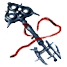
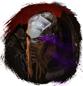
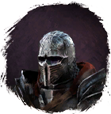

Ключ на мостик
Предметы / С заданий
Открыть в интерактивной вики →
| Вес | 1 |
|---|
Описание
Ключ от Арсенала корабля адмиральского класса. Берем из сундука после того как убьем всех офицеров  Ирудам
Ирудам
Ирудам 
Тассам
Саллам